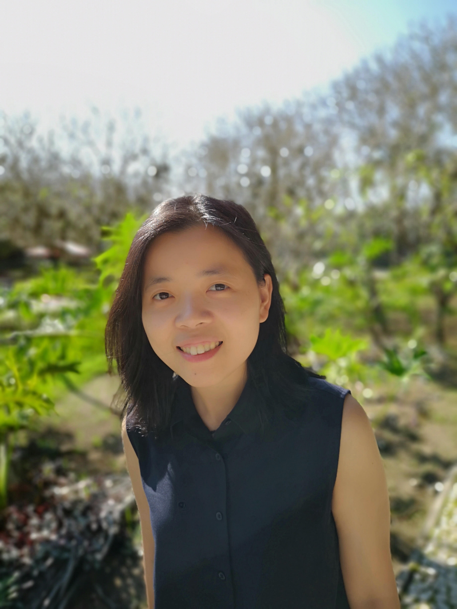

 I am an Associate Professor at the Department of Mathematics and Statistics, and the Assistant Dean for Research and Advanced Studies (ADRAS) of the College of Science at De La Salle University (DLSU). I am a research fellow of the Mathematical and Statistical Modeling Unit of the Center for Natural Sciences and Environmental Research (CENSER) Research Center, College of Science, DLSU, and also a member of the the Center for Complexity and Emerging Technologies (COMET) of the Advanced Research Institute for Informatics, Computing, and Networking (AdRIC) Research Center, College of Computer Studies, DLSU. My research interests are Systems Biology, Graph Theory, and Mathematical Modeling.
I earned my doctorate degree in systems biology and bioinformatics at Rostock University in Germany. I hold the Br. C. John Lynan FSC Professorial Chair in Mathematics, and the Br. Albinus Peter FSC Professorial Chair in Mathematics, at DLSU. I am a member of the National Research Council of the Philippines (NRCP), and Society for Industrial and Applied Mathematics (SIAM). I won the Outstanding Scientific Paper Award, Philippines National Academy of Science and Technology in 2020, Open Arms Travel Grant, International Congress of Mathematicians/International Mathematical Union in 2018, Best Paper Presentation Award IEEE 9th International Conference on Information, Intelligence, Systems & Applications in 2018, Travel Grant, The Abdus Salam International Centre for Theoretical Physics in 2016, Best Presentation Award, and Hands-On Research in Complex Systems School in 2016. If you are interested to collaborate, please contact me via email.